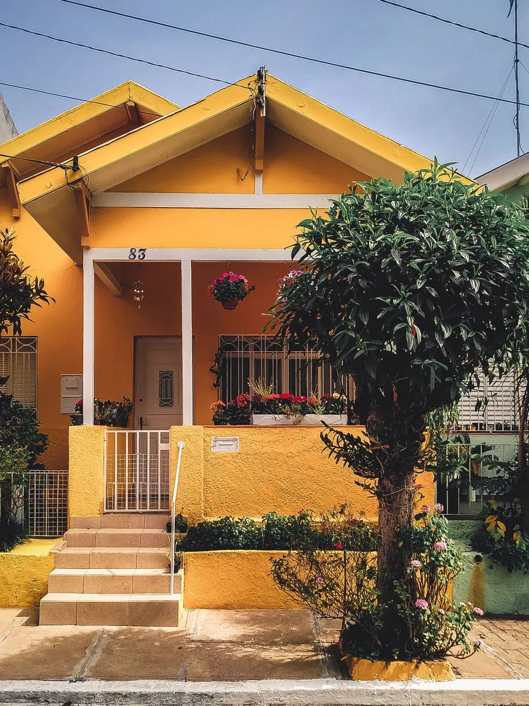

Rooted in rural.
Built for the long run.
A national nonprofit that helps local organizations build homes, strengthen communities and plan for what comes next.
A safe, affordable home should not depend on your zip code.
The Housing Assistance Council supports affordable housing efforts throughout rural America, with a focus on the poorest communities and those most often left out.
Since 1971 we have worked alongside local nonprofits, tribes, governments and builders in every state and the territories, providing financing, training, research and policy analysis.

Progress you can see.
Staff can update these highlights at any time from the content management system.
 Lending
LendingHomes built and repaired
Capital for self-help housing, rentals and community facilities.
How lending works ↗ Capacity
CapacityStronger local groups
Training and technical help that stays with an organization.
See trainings ↗ Research
ResearchData that drives decisions
Reports and tools that help communities make their case.
Explore research ↗
We'll point you to people nearby.
HAC works through local organizations rather than directly with families. Tell us your state and we'll show trusted local groups that can help with buying, repairs or rent.
Find local help
Good homes take all of us.
Funders, lenders, businesses and individuals all help rural communities thrive.
- 01 / GIVE
Make a gift.
Every gift supports training, research and lending in rural places.
- 02 / INVEST
Invest in our loan fund.
Put capital to work for affordable rural homes.
Investor information ↗ - 03 / PARTNER
Work with us.
Sponsor research, a training series or a conference session.
Start a conversation ↗